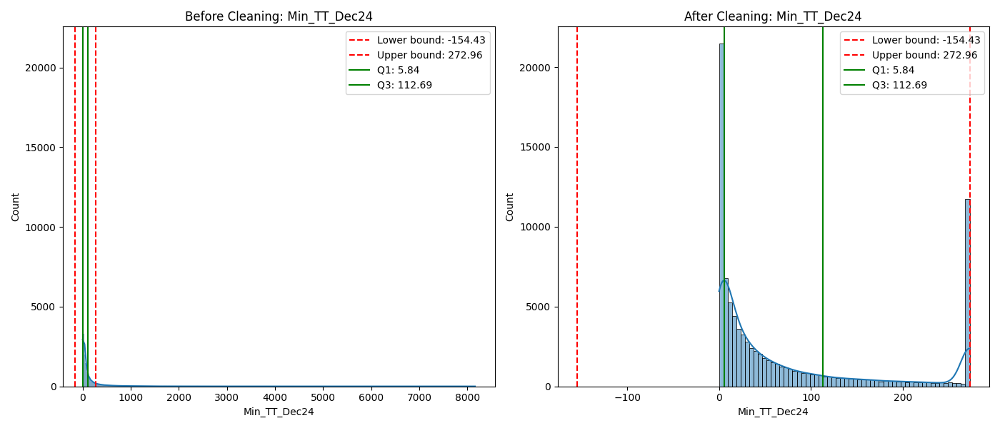
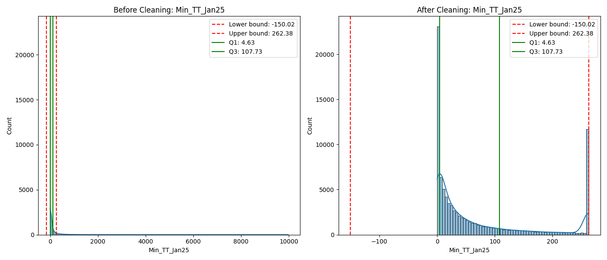
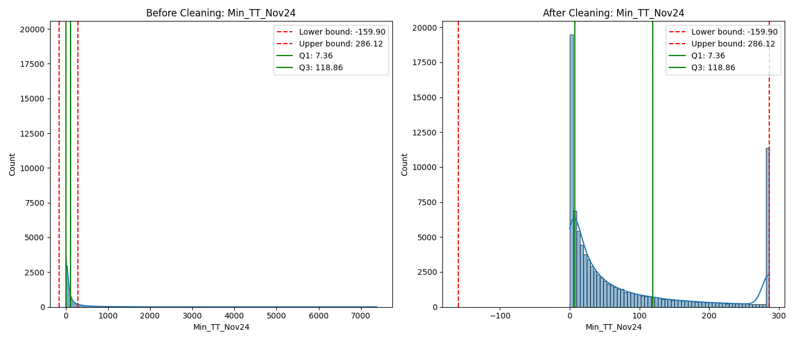
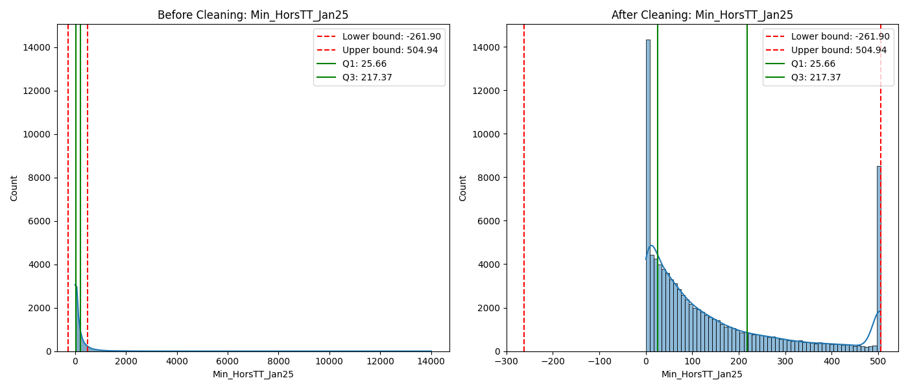
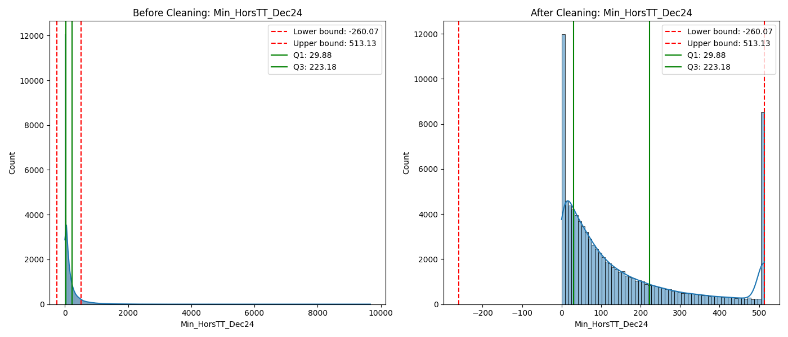
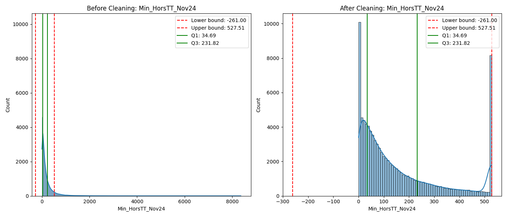
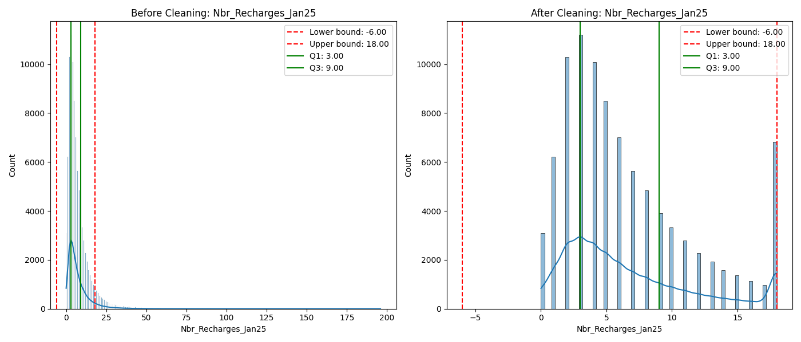
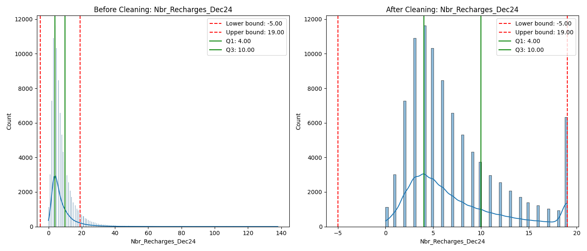
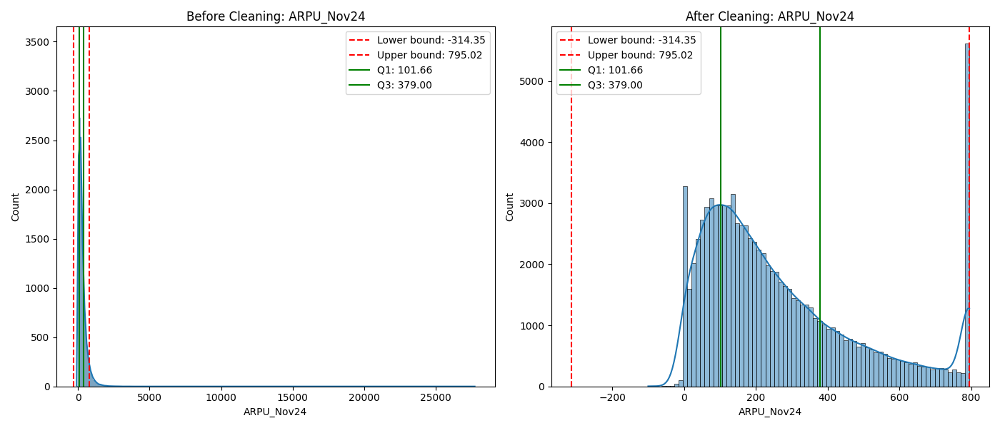
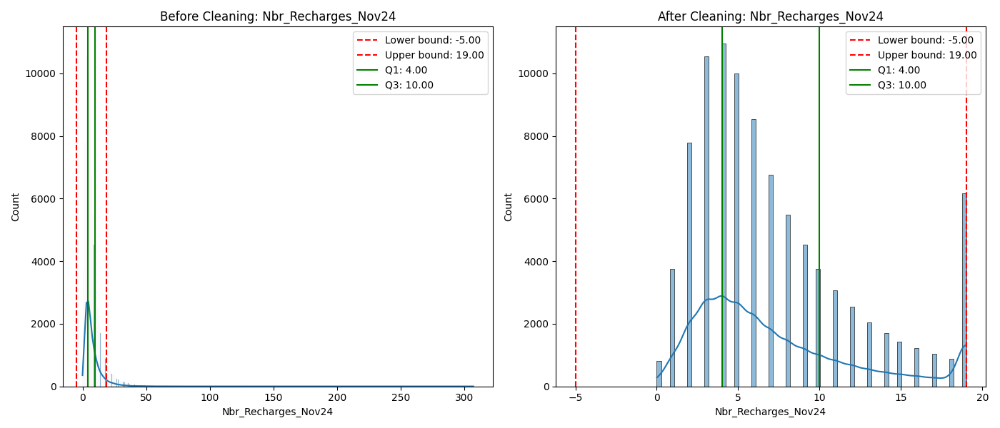

Date: 2025-06-17 04:51:30
User: AmineZouaghi
This report details the data cleaning process applied to the Tunisie Telecom dataset using the IQR (Interquartile Range) method for outlier detection.
| Metric | Count | Percentage |
|---|---|---|
| Total rows | 92943 | 100% |
| Missing values fixed | 18066 | 0.93% |
| Negative values corrected | 29 | 0.00% |
| Outliers capped (IQR method) | 91820 | 5.20% |
The following sections show how the data is distributed before and after cleaning for the columns with the most outliers.
The Interquartile Range (IQR) method identifies outliers based on the statistical distribution of the data:
Any values below the lower bound or above the upper bound are considered outliers and are capped at these thresholds.
Total Outliers: 11551 (12.43% of data)
Lower Outliers: 0 | Upper Outliers: 11551

| Statistic | Before Cleaning | After Cleaning | Change |
|---|---|---|---|
| Minimum | 0.00 | 0.00 | 0.00 |
| Maximum | 8157.78 | 272.96 | -7884.81 |
| Mean | 131.48 | 76.14 | -55.34 |
| Median | 30.98 | 30.98 | 0.00 |
| Standard Deviation | 305.90 | 93.85 | ↓ 69.32% |
| Range | 8157.78 | 272.96 | ↓ 96.65% |
| Q1 (25th percentile) | 5.84 | 5.84 | - |
| Q3 (75th percentile) | 112.69 | 112.69 | - |
| IQR | 106.85 | 106.85 | - |
Total Outliers: 11523 (12.40% of data)
Lower Outliers: 0 | Upper Outliers: 11523

| Statistic | Before Cleaning | After Cleaning | Change |
|---|---|---|---|
| Minimum | 0.00 | 0.00 | 0.00 |
| Maximum | 9977.41 | 262.38 | -9715.03 |
| Mean | 126.34 | 72.42 | -53.93 |
| Median | 28.81 | 28.81 | 0.00 |
| Standard Deviation | 300.13 | 90.31 | ↓ 69.91% |
| Range | 9977.41 | 262.38 | ↓ 97.37% |
| Q1 (25th percentile) | 4.63 | 4.63 | - |
| Q3 (75th percentile) | 107.73 | 107.73 | - |
| IQR | 103.10 | 103.10 | - |
Total Outliers: 11200 (12.05% of data)
Lower Outliers: 0 | Upper Outliers: 11200

| Statistic | Before Cleaning | After Cleaning | Change |
|---|---|---|---|
| Minimum | 0.00 | 0.00 | 0.00 |
| Maximum | 7376.71 | 286.12 | -7090.59 |
| Mean | 132.49 | 80.27 | -52.23 |
| Median | 34.29 | 34.29 | 0.00 |
| Standard Deviation | 297.06 | 97.22 | ↓ 67.27% |
| Range | 7376.71 | 286.12 | ↓ 96.12% |
| Q1 (25th percentile) | 7.36 | 7.36 | - |
| Q3 (75th percentile) | 118.86 | 118.86 | - |
| IQR | 111.50 | 111.50 | - |
Total Outliers: 8314 (8.95% of data)
Lower Outliers: 0 | Upper Outliers: 8314

| Statistic | Before Cleaning | After Cleaning | Change |
|---|---|---|---|
| Minimum | 0.00 | 0.00 | 0.00 |
| Maximum | 14007.34 | 504.94 | -13502.41 |
| Mean | 187.69 | 147.80 | -39.89 |
| Median | 85.01 | 85.01 | 0.00 |
| Standard Deviation | 321.35 | 158.98 | ↓ 50.53% |
| Range | 14007.34 | 504.94 | ↓ 96.40% |
| Q1 (25th percentile) | 25.66 | 25.66 | - |
| Q3 (75th percentile) | 217.37 | 217.37 | - |
| IQR | 191.71 | 191.71 | - |
Total Outliers: 8277 (8.91% of data)
Lower Outliers: 0 | Upper Outliers: 8277

| Statistic | Before Cleaning | After Cleaning | Change |
|---|---|---|---|
| Minimum | 0.00 | 0.00 | 0.00 |
| Maximum | 9667.13 | 513.13 | -9154.00 |
| Mean | 194.31 | 152.69 | -41.62 |
| Median | 89.14 | 89.14 | 0.00 |
| Standard Deviation | 325.12 | 160.82 | ↓ 50.53% |
| Range | 9667.13 | 513.13 | ↓ 94.69% |
| Q1 (25th percentile) | 29.88 | 29.88 | - |
| Q3 (75th percentile) | 223.18 | 223.18 | - |
| IQR | 193.30 | 193.30 | - |
Total Outliers: 7947 (8.55% of data)
Lower Outliers: 0 | Upper Outliers: 7947

| Statistic | Before Cleaning | After Cleaning | Change |
|---|---|---|---|
| Minimum | 0.00 | 0.00 | 0.00 |
| Maximum | 8362.36 | 527.51 | -7834.85 |
| Mean | 198.05 | 158.80 | -39.25 |
| Median | 96.36 | 96.36 | 0.00 |
| Standard Deviation | 316.82 | 162.73 | ↓ 48.64% |
| Range | 8362.36 | 527.51 | ↓ 93.69% |
| Q1 (25th percentile) | 34.69 | 34.69 | - |
| Q3 (75th percentile) | 231.82 | 231.82 | - |
| IQR | 197.13 | 197.13 | - |
Total Outliers: 5992 (6.45% of data)
Lower Outliers: 0 | Upper Outliers: 5992

| Statistic | Before Cleaning | After Cleaning | Change |
|---|---|---|---|
| Minimum | 0.00 | 0.00 | 0.00 |
| Maximum | 196.00 | 18.00 | -178.00 |
| Mean | 7.22 | 6.61 | -0.61 |
| Median | 5.00 | 5.00 | 0.00 |
| Standard Deviation | 7.18 | 5.01 | ↓ 30.29% |
| Range | 196.00 | 18.00 | ↓ 90.82% |
| Q1 (25th percentile) | 3.00 | 3.00 | - |
| Q3 (75th percentile) | 9.00 | 9.00 | - |
| IQR | 6.00 | 6.00 | - |
Total Outliers: 5570 (5.99% of data)
Lower Outliers: 0 | Upper Outliers: 5570

| Statistic | Before Cleaning | After Cleaning | Change |
|---|---|---|---|
| Minimum | 0.00 | 0.00 | 0.00 |
| Maximum | 138.00 | 19.00 | -119.00 |
| Mean | 7.82 | 7.25 | -0.57 |
| Median | 6.00 | 6.00 | 0.00 |
| Standard Deviation | 7.09 | 4.99 | ↓ 29.65% |
| Range | 138.00 | 19.00 | ↓ 86.23% |
| Q1 (25th percentile) | 4.00 | 4.00 | - |
| Q3 (75th percentile) | 10.00 | 10.00 | - |
| IQR | 6.00 | 6.00 | - |
Total Outliers: 5409 (5.82% of data)
Lower Outliers: 0 | Upper Outliers: 5409

| Statistic | Before Cleaning | After Cleaning | Change |
|---|---|---|---|
| Minimum | -100.00 | -100.00 | 0.00 |
| Maximum | 27731.09 | 795.02 | -26936.07 |
| Mean | 291.97 | 269.21 | -22.76 |
| Median | 205.23 | 205.23 | 0.00 |
| Standard Deviation | 330.96 | 219.69 | ↓ 33.62% |
| Range | 27831.09 | 895.02 | ↓ 96.78% |
| Q1 (25th percentile) | 101.66 | 101.66 | - |
| Q3 (75th percentile) | 379.00 | 379.00 | - |
| IQR | 277.34 | 277.34 | - |
Total Outliers: 5407 (5.82% of data)
Lower Outliers: 0 | Upper Outliers: 5407

| Statistic | Before Cleaning | After Cleaning | Change |
|---|---|---|---|
| Minimum | 0.00 | 0.00 | 0.00 |
| Maximum | 307.00 | 19.00 | -288.00 |
| Mean | 7.79 | 7.22 | -0.57 |
| Median | 6.00 | 6.00 | 0.00 |
| Standard Deviation | 7.12 | 4.97 | ↓ 30.22% |
| Range | 307.00 | 19.00 | ↓ 93.81% |
| Q1 (25th percentile) | 4.00 | 4.00 | - |
| Q3 (75th percentile) | 10.00 | 10.00 | - |
| IQR | 6.00 | 6.00 | - |
| Column | Missing Count | Method |
|---|---|---|
| Min_TT_Nov24 | 1 | Replaced with 0 |
| Min_TT_Dec24 | 2021 | Replaced with 0 |
| Min_TT_Jan25 | 4000 | Replaced with 0 |
| Min_HorsTT_Nov24 | 1 | Replaced with 0 |
| Min_HorsTT_Dec24 | 2021 | Replaced with 0 |
| Min_HorsTT_Jan25 | 4000 | Replaced with 0 |
| Min_TT_ServiceClient_Nov24 | 1 | Replaced with 0 |
| Min_TT_ServiceClient_Dec24 | 2021 | Replaced with 0 |
| Min_TT_ServiceClient_Jan25 | 4000 | Replaced with 0 |
| Column | Negative Count | Method |
|---|---|---|
| ARPU_Nov24 | 9 | Capped extreme negative values |
| ARPU_Dec24 | 15 | Capped extreme negative values |
| ARPU_Jan25 | 5 | Capped extreme negative values |